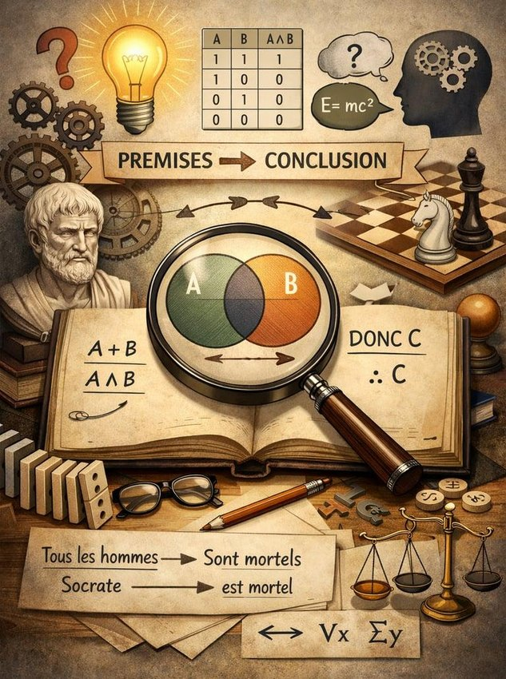
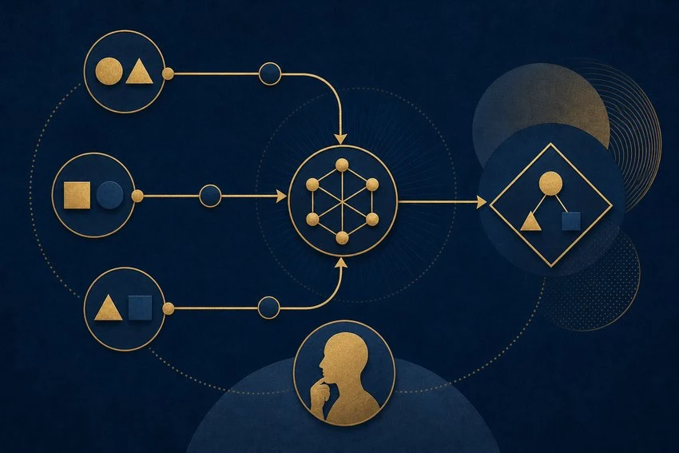
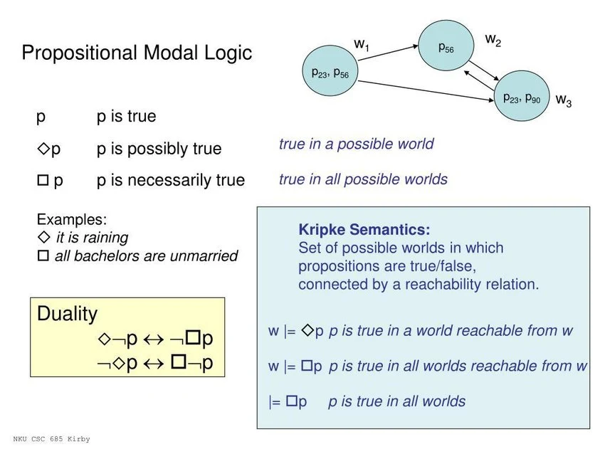
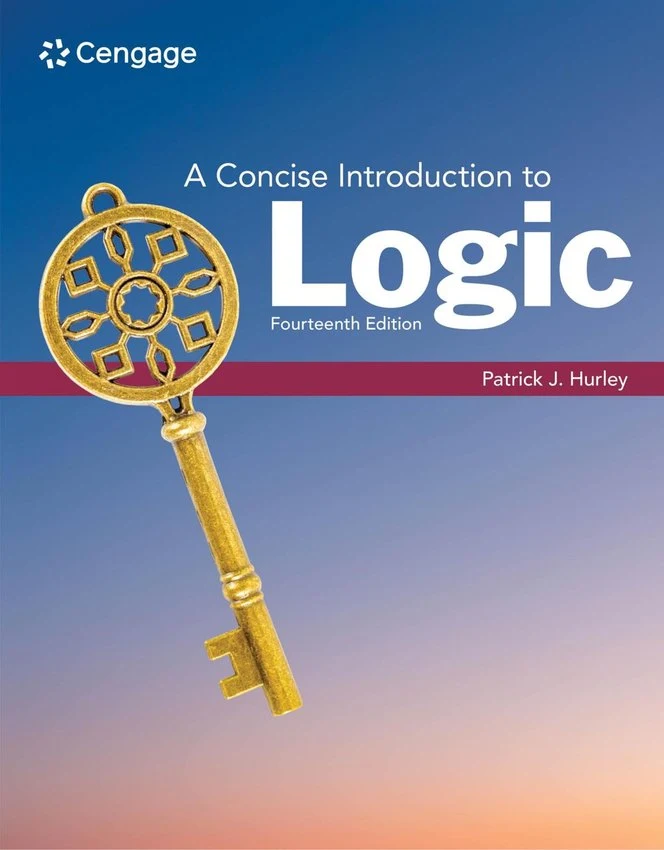
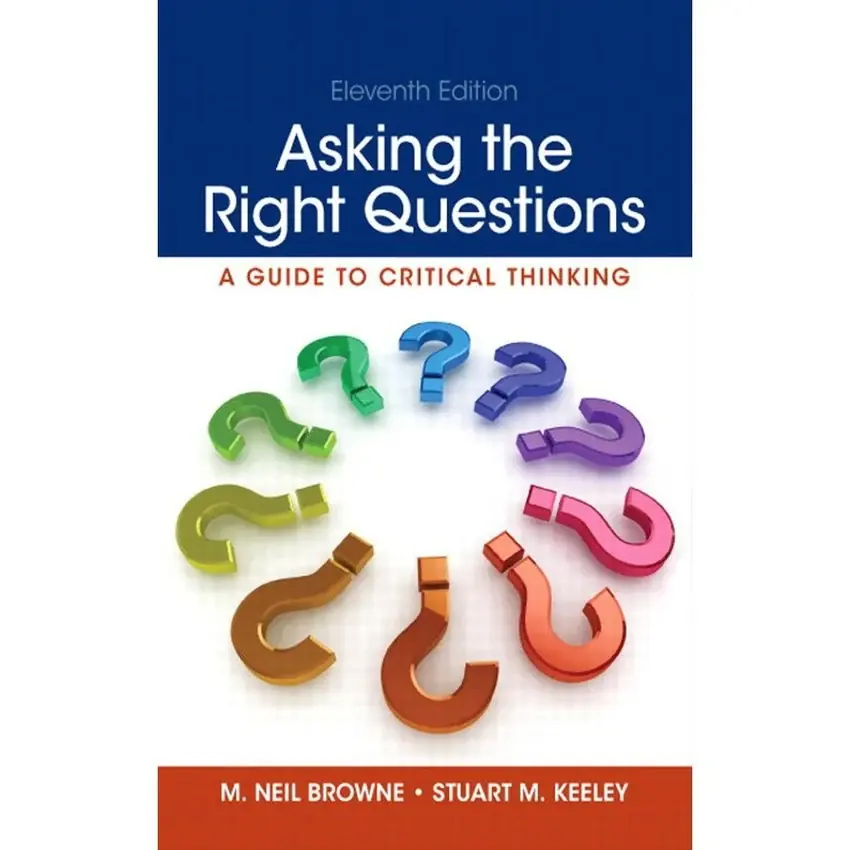
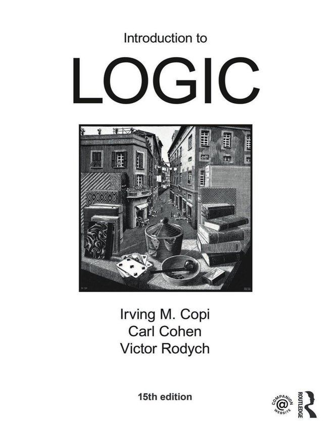

মানুষকে অন্যান্য প্রাণী থেকে স্বতন্ত্র করেছে তার চিন্তাশক্তি, বিবেক, বিচারবুদ্ধি ও যুক্তি প্রয়োগের ক্ষমতা। মানুষ প্রতিনিয়ত অসংখ্য বিষয়ে চিন্তা করে, প্রশ্ন করে, সিদ্ধান্ত নেয় এবং বিভিন্ন বিষয়ে সত্য-মিথ্যা নির্ণয় করার চেষ্টা করে। কিন্তু মানুষের প্রতিটি চিন্তা সঠিক হয় না। অনেক সময় আবেগ, কুসংস্কার, পূর্বধারণা, অজ্ঞতা কিংবা ভুল তথ্যের কারণে মানুষ ভুল সিদ্ধান্তে পৌঁছে যায়।
তাহলে কীভাবে আমরা বুঝব কোন চিন্তাটি সঠিক এবং কোনটি ভুল? কীভাবে একটি দাবির সত্যতা যাচাই করব? কীভাবে প্রমাণ ও অপ্রমাণের মধ্যে পার্থক্য করব?
এসব প্রশ্নের সুশৃঙ্খল উত্তর খুঁজতে যে শাস্ত্রের প্রয়োজন হয়, তার নাম যুক্তিবিদ্যা (Logic)।
যুক্তিবিদ্যা শুধু দর্শনের একটি শাখা নয়; এটি মানুষের চিন্তা, গবেষণা, বিজ্ঞান, ধর্মতত্ত্ব, বিতর্ক, আইন, গণিত এবং দৈনন্দিন জীবন পরিচালনার অন্যতম গুরুত্বপূর্ণ হাতিয়ার।
১. যুক্তিবিদ্যা কাকে বলে?
যুক্তিবিদ্যা শব্দটির ইংরেজি প্রতিশব্দ হলো Logic। এটি গ্রিক শব্দ Logos থেকে এসেছে। Logos শব্দের অর্থ কথা, চিন্তা, যুক্তি, আলোচনা বা বিবেচনা।
সংজ্ঞা:
যুক্তিবিদ্যা হলো এমন একটি শাস্ত্র, যা সঠিক চিন্তা, যুক্তি প্রদান, সিদ্ধান্ত গ্রহণ এবং যুক্তির বৈধতা যাচাইয়ের নিয়ম ও নীতিমালা নিয়ে আলোচনা করে।
সহজ ভাষায়:
কোনো বিষয়ে কীভাবে চিন্তা করতে হবে, কীভাবে প্রমাণ উপস্থাপন করতে হবে এবং কীভাবে যুক্তিসংগত সিদ্ধান্তে পৌঁছাতে হবে—তা শেখায় যুক্তিবিদ্যা।
অন্যভাবে বলা যায়:
যুক্তিবিদ্যা হলো সঠিকভাবে চিন্তা করার বিজ্ঞান এবং যুক্তির শুদ্ধতা যাচাই করার পদ্ধতিগত বিদ্যা।
তবে একটি বিষয় মনে রাখতে হবে: যুক্তিবিদ্যা সরাসরি কোনো বক্তব্যের বাস্তব সত্যতা নির্ধারণ করে না; বরং বক্তব্য থেকে সিদ্ধান্তে পৌঁছানোর যুক্তিপদ্ধতি সঠিক কি না, তা যাচাই করে।
উদাহরণ:
- সকল মানুষ মরণশীল।
- সক্রেটিস একজন মানুষ।
- অতএব, সক্রেটিস মরণশীল।
এখানে প্রথম দুটি বক্তব্য সত্য হলে তৃতীয় সিদ্ধান্তটি যুক্তিগতভাবে অনিবার্য। এটাই যুক্তিবিদ্যার একটি সাধারণ উদাহরণ।
২. যুক্তিবিদ্যা কেন প্রয়োজন?
মানুষের জীবনে যুক্তিবিদ্যার প্রয়োজনীয়তা অপরিসীম। কারণ আমরা প্রতিনিয়ত বিভিন্ন দাবি, তথ্য, মতামত ও সিদ্ধান্তের মুখোমুখি হই।
যুক্তিবিদ্যা প্রয়োজন হওয়ার প্রধান কারণগুলো হলো:
১. সত্য ও মিথ্যা যাচাই করতে
কেউ কোনো দাবি করলেই সেটি সত্য হয়ে যায় না। তার পক্ষে কী প্রমাণ রয়েছে, প্রমাণটি গ্রহণযোগ্য কি না এবং সিদ্ধান্তটি প্রমাণ থেকে যথাযথভাবে এসেছে কি না, তা যাচাই করতে যুক্তিবিদ্যা প্রয়োজন।
২. ভুল চিন্তা থেকে বাঁচতে
মানুষ অনেক সময় আবেগ, সামাজিক প্রচলন কিংবা ব্যক্তিগত বিশ্বাসের কারণে ভুল সিদ্ধান্ত নেয়। যুক্তিবিদ্যা এসব ভুল চিন্তার দুর্বলতা শনাক্ত করতে সাহায্য করে।
৩. সঠিক সিদ্ধান্ত গ্রহণ করতে
শিক্ষা, পেশা, অর্থনীতি, পরিবার এবং সামাজিক জীবনে অসংখ্য সিদ্ধান্ত নিতে হয়। যুক্তির সাহায্যে বিকল্পগুলো বিশ্লেষণ করে ভালো সিদ্ধান্ত নেওয়া যায়।
৪. প্রতারণা ও ভ্রান্ত যুক্তি শনাক্ত করতে
অনেক মানুষ এমনভাবে কথা বলে, যেন তার বক্তব্য অত্যন্ত শক্তিশালী, অথচ বাস্তবে তার যুক্তির মধ্যে ভুল থাকে। যুক্তিবিদ্যা এসব ভ্রান্তি শনাক্ত করতে সাহায্য করে।
৫. জ্ঞান অর্জন করতে
বিজ্ঞান, দর্শন, ইতিহাস ও ধর্মতত্ত্বের বিভিন্ন বিষয় বুঝতে প্রমাণ, পর্যবেক্ষণ ও যুক্তির প্রয়োজন হয়।
৬. বিতর্ক ও আলোচনায় দক্ষ হতে
কোনো বিষয়ে নিজের অবস্থান প্রতিষ্ঠা করতে হলে শুধু দাবি করলেই হয় না; বরং প্রমাণ ও যুক্তির মাধ্যমে তা প্রতিষ্ঠা করতে হয়।
৩. যুক্তিবিদ্যার প্রধান উপাদান
যুক্তিবিদ্যা বুঝতে হলে কয়েকটি মৌলিক বিষয় জানা প্রয়োজন।
ক. ধারণা (Concept)
কোনো বস্তু, ব্যক্তি, ঘটনা বা বিষয় সম্পর্কে মনের প্রাথমিক উপলব্ধিকে ধারণা বলে।
উদাহরণ:
- মানুষ
- প্রাণী
- ন্যায়বিচার
- স্বাধীনতা
- ঈশ্বর
- বিজ্ঞান
ধারণা নিজে সত্য বা মিথ্যা নয়। যেমন, 'মানুষ' একটি ধারণা; এটি কোনো সত্য বা মিথ্যা বক্তব্য নয়।
খ. বচন বা প্রস্তাব (Proposition)
যে বক্তব্যের মাধ্যমে কোনো বিষয় সম্পর্কে কিছু স্বীকার বা অস্বীকার করা হয় এবং যা সত্য অথবা মিথ্যা হতে পারে, তাকে বচন বলে।
উদাহরণ:
- পৃথিবী সূর্যের চারদিকে ঘোরে।
- সকল মানুষ মরণশীল।
- বাংলাদেশ দক্ষিণ এশিয়ায় অবস্থিত।
এসব বক্তব্যের সত্যতা যাচাই করা সম্ভব।
গ. যুক্তি (Argument)
এক বা একাধিক বক্তব্যের ভিত্তিতে অন্য একটি বক্তব্য প্রতিষ্ঠার প্রক্রিয়াকে যুক্তি বলে।
যুক্তির সাধারণত দুটি প্রধান অংশ থাকে:
- Premise (পূর্বপক্ষ বা আশ্রয়বাক্য): যে বক্তব্যগুলোর ভিত্তিতে সিদ্ধান্ত নেওয়া হয়।
- Conclusion (সিদ্ধান্ত): যে বক্তব্যটি পূর্বপক্ষ থেকে প্রতিষ্ঠা করা হয়।
উদাহরণ:
- সকল মানুষ মরণশীল।
- রহিম একজন মানুষ।
- অতএব, রহিম মরণশীল।
এখানে প্রথম দুটি বক্তব্য Premise এবং তৃতীয়টি Conclusion।
ঘ. অনুমান (Inference)
এক বা একাধিক জানা তথ্যের ভিত্তিতে নতুন কোনো সিদ্ধান্তে পৌঁছানোর মানসিক প্রক্রিয়াকে অনুমান বলে।
যেমন, আকাশে কালো মেঘ, বজ্রপাত ও বাতাস দেখে বৃষ্টি হওয়ার সম্ভাবনা অনুমান করা।
৪. যুক্তিবিদ্যার প্রধান প্রকারভেদ
যুক্তিবিদ্যাকে বিভিন্নভাবে শ্রেণিবদ্ধ করা যায়। আধুনিক যুক্তিবিদ্যার কয়েকটি গুরুত্বপূর্ণ শাখা হলো:

১. অবরোহী যুক্তিবিদ্যা (Deductive Logic)
সাধারণ নিয়ম বা নীতি থেকে বিশেষ সিদ্ধান্তে পৌঁছানোর পদ্ধতি।
উদাহরণ: সকল মানুষ মরণশীল। করিম মানুষ। অতএব, করিম মরণশীল।
২. আরোহী যুক্তিবিদ্যা (Inductive Logic)
একাধিক বিশেষ ঘটনা বা পর্যবেক্ষণ থেকে সাধারণ সিদ্ধান্তে পৌঁছানোর পদ্ধতি।
উদাহরণ: পর্যবেক্ষণে দেখা গেল, কয়েকটি নির্দিষ্ট ধাতু উত্তাপে প্রসারিত হয়। সেখান থেকে ধাতুর তাপীয় প্রসারণ সম্পর্কে সাধারণ ধারণা তৈরি করা।

৩. প্রতীকী যুক্তিবিদ্যা (Symbolic Logic)
যুক্তিকে প্রতীক, চিহ্ন ও গাণিতিক কাঠামোর মাধ্যমে প্রকাশ ও বিশ্লেষণ করা হয়।
উদাহরণ: P → Q
অর্থাৎ P সত্য হলে Q সত্য হবে।
৪. অনানুষ্ঠানিক যুক্তিবিদ্যা (Informal Logic)
দৈনন্দিন কথাবার্তা, বিতর্ক, সংবাদ, প্রবন্ধ ও আলোচনায় ব্যবহৃত যুক্তির যথার্থতা বিশ্লেষণ করে।

৫. প্রকারগত বা মডাল যুক্তিবিদ্যা (Modal Logic)
কোনো বিষয় অবশ্যই সত্য, সম্ভবত সত্য কিংবা অসম্ভব কি না, তা নিয়ে আলোচনা করে।
উদাহরণ: কোনো ঘটনা ঘটতে পারে, ঘটতেই হবে অথবা ঘটতে পারে না।
৫. অবরোহী ও আরোহী যুক্তির মধ্যে পার্থক্য
এই দুটি যুক্তিপদ্ধতি বিশেষভাবে গুরুত্বপূর্ণ।
| বিষয় | অবরোহী যুক্তি | আরোহী যুক্তি |
|---|---|---|
| ইংরেজি | Deductive | Inductive |
| দিক | সাধারণ থেকে বিশেষ | বিশেষ থেকে সাধারণ |
| সিদ্ধান্ত | পূর্বপক্ষ সত্য ও যুক্তি বৈধ হলে অনিবার্য | সাধারণত সম্ভাবনামূলক |
| ব্যবহার | গণিত, দর্শন | বিজ্ঞান, গবেষণা |
| উদাহরণ | সকল মানুষ মরণশীল | পর্যবেক্ষণ থেকে সাধারণ নিয়ম |
একটি বিষয় পরিষ্কার করা প্রয়োজন: অবরোহী যুক্তি বৈধ হলেই তার পূর্বপক্ষ বাস্তবে সত্য হবে, এমন নয়। পূর্বপক্ষ সত্য এবং যুক্তি বৈধ—দুটি শর্ত পূরণ হলে যুক্তিটি Sound বা সুপ্রতিষ্ঠিত হয়।
৬. যুক্তির বৈধতা ও সত্যতার মধ্যে পার্থক্য
যুক্তিবিদ্যার অত্যন্ত গুরুত্বপূর্ণ একটি বিষয় হলো Validity এবং Truth-এর পার্থক্য।
Truth (সত্যতা): কোনো বক্তব্য বাস্তবতার সঙ্গে সামঞ্জস্যপূর্ণ কি না।
Validity (বৈধতা): পূর্বপক্ষগুলো সত্য ধরে নিলে সিদ্ধান্তটি অবশ্যই অনুসরণ করে কি না।
উদাহরণ:
- সকল পাখি স্তন্যপায়ী।
- কাক একটি পাখি।
- অতএব, কাক একটি স্তন্যপায়ী।
এখানে যুক্তির কাঠামো বৈধ, কিন্তু প্রথম বক্তব্যটি মিথ্যা। তাই যুক্তিটি Sound নয়।
অন্যদিকে:
- সকল মানুষ মরণশীল।
- রহিম মানুষ।
- অতএব, রহিম মরণশীল।
এখানে যুক্তির কাঠামোও বৈধ এবং পূর্বপক্ষগুলোও সত্য। তাই এটি একটি Sound Argument।
এই পার্থক্য না বুঝলে মানুষ অনেক সময় ভুল যুক্তিকেও সঠিক মনে করে।
৭. যুক্তির কয়েকটি গুরুত্বপূর্ণ নিয়ম
সঠিক যুক্তি নির্মাণের জন্য কিছু নীতি অনুসরণ করা প্রয়োজন।
- বক্তব্য স্পষ্ট হতে হবে।
- প্রমাণের সঙ্গে সিদ্ধান্তের সম্পর্ক থাকতে হবে।
- একই শব্দকে ভিন্ন অর্থে ব্যবহার করা যাবে না।
- প্রমাণ ছাড়া কোনো সিদ্ধান্তকে নিশ্চিত সত্য হিসেবে উপস্থাপন করা যাবে না।
- ব্যক্তিগত আক্রমণের পরিবর্তে বক্তব্যের বিষয়বস্তু বিশ্লেষণ করতে হবে।
- বিপরীত প্রমাণ পাওয়া গেলে নিজের অবস্থান সংশোধনের মানসিকতা থাকতে হবে।
- কোনো কিছুর অনুপস্থিত প্রমাণকে সবসময় তার অনস্তিত্বের প্রমাণ হিসেবে বিবেচনা করা যাবে না।
৮. যুক্তিবিদ্যার গুরুত্বপূর্ণ ভ্রান্তি (Logical Fallacies)
যুক্তির মধ্যে এমন কিছু ভুল রয়েছে, যেগুলো দেখতে শক্তিশালী মনে হলেও প্রকৃতপক্ষে সঠিক যুক্তি নয়। এগুলোকে Logical Fallacy বা যুক্তিগত ভ্রান্তি বলা হয়।
নিচে কয়েকটি গুরুত্বপূর্ণ ভ্রান্তি আলোচনা করা হলো।
১. ব্যক্তিগত আক্রমণ (Ad Hominem)
কোনো বক্তব্যের জবাব না দিয়ে বক্তার ব্যক্তিগত চরিত্র বা পরিচয়কে আক্রমণ করা।
উদাহরণ:
রহিম: পৃথিবীর জলবায়ু পরিবর্তন হচ্ছে।
করিম: তুমি তো কোনো বিজ্ঞানী নও, তোমার কথা গ্রহণযোগ্য নয়।
এখানে করিম বক্তব্যের প্রমাণ খণ্ডন না করে বক্তাকে আক্রমণ করেছে।
২. Strawman Fallacy (বিকৃত যুক্তি)
প্রতিপক্ষের বক্তব্যকে বিকৃত করে সহজে খণ্ডন করার চেষ্টা।
উদাহরণ:
ব্যক্তি A: আমাদের শিক্ষাব্যবস্থায় পরিবর্তন প্রয়োজন।
ব্যক্তি B: তুমি তাহলে শিক্ষাব্যবস্থা সম্পূর্ণ ধ্বংস করতে চাও!
এখানে B, A-এর প্রকৃত বক্তব্যকে বিকৃত করেছে।
৩. Appeal to Authority (কর্তৃত্বের প্রতি আবেদন)
কেবল কোনো বিখ্যাত বা ক্ষমতাবান ব্যক্তি বলেছেন বলে কোনো বক্তব্যকে সত্য ধরে নেওয়া।
উদাহরণ:
একজন বিখ্যাত অভিনেতা বললেন, একটি নির্দিষ্ট ওষুধ সব রোগ সারিয়ে দেয়। তাই এটি অবশ্যই সত্য।
এটি ভুল। কারণ বক্তব্যের সত্যতা নির্ভর করে প্রমাণের ওপর, শুধু বক্তার পরিচয়ের ওপর নয়।
তবে কোনো বিষয়ে সংশ্লিষ্ট বিশেষজ্ঞের মতামত প্রাসঙ্গিক প্রমাণ হতে পারে।
৪. False Dilemma (মিথ্যা দ্বিবিকল্প)
যখন কোনো বিষয়ে মাত্র দুটি বিকল্প আছে বলে দাবি করা হয়, অথচ বাস্তবে আরও বিকল্প থাকতে পারে।
উদাহরণ:
হয় তুমি আমার সঙ্গে একমত, নয়তো তুমি আমার শত্রু।
এখানে দুটি বিকল্পের বাইরে আরও অবস্থান সম্ভব।
৫. Circular Reasoning (চক্রাকার যুক্তি)
যখন কোনো দাবিকে প্রমাণ করতে সেই একই দাবিকে অন্যভাবে ব্যবহার করা হয়।
উদাহরণ:
এই বইটি সত্য, কারণ এতে যা লেখা আছে সব সত্য।
কিন্তু বইটি সত্য কেন? কারণ এটি একটি সত্য বই।
এখানে দাবিটির স্বাধীন প্রমাণ দেওয়া হয়নি।
৬. Hasty Generalization (তাড়াহুড়ো করে সাধারণীকরণ)
অল্প কয়েকটি উদাহরণের ভিত্তিতে বড় ধরনের সাধারণ সিদ্ধান্ত নেওয়া।
উদাহরণ:
আমি দুজন অসৎ ব্যবসায়ী দেখেছি। অতএব, সব ব্যবসায়ী অসৎ।
এটি একটি ভুল সাধারণীকরণ।
৭. Post Hoc Fallacy (ঘটনার পর ঘটেছে বলে কারণ ধরে নেওয়া)
একটি ঘটনা অন্য ঘটনার পরে ঘটেছে বলে প্রথম ঘটনাটিকে দ্বিতীয়টির কারণ মনে করা।
উদাহরণ:
আমি লাল জামা পরে পরীক্ষায় ভালো ফল করেছি। অতএব, লাল জামা পরার কারণেই ভালো ফল হয়েছে।
এখানে কার্যকারণের সম্পর্ক প্রমাণিত হয়নি।
৮. Appeal to Popularity (জনপ্রিয়তার প্রতি আবেদন)
অনেক মানুষ কোনো বিষয় বিশ্বাস করে বলে সেটিকে সত্য মনে করা।
উদাহরণ:
লক্ষ লক্ষ মানুষ এই কথাটি বিশ্বাস করে। অতএব, কথাটি সত্য।
কোনো বিশ্বাসের জনপ্রিয়তা তার সত্যতার নিশ্চয়তা নয়।
৯. দর্শন ও ধর্মতত্ত্বে যুক্তিবিদ্যার ভূমিকা
যুক্তিবিদ্যার অন্যতম গুরুত্বপূর্ণ ব্যবহার হলো দর্শন ও ধর্মতত্ত্ব।
মানুষ বহু প্রাচীনকাল থেকেই কয়েকটি মৌলিক প্রশ্নের উত্তর অনুসন্ধান করে আসছে:
- ঈশ্বরের অস্তিত্ব আছে কি?
- মহাবিশ্বের উৎপত্তি কীভাবে হয়েছে?
- নৈতিকতার ভিত্তি কী?
- মানুষের স্বাধীন ইচ্ছা আছে কি?
- মৃত্যুর পরে জীবন আছে কি?
- কোনো ধর্মের দাবির সত্যতা কীভাবে যাচাই করা যায়?
এসব প্রশ্নের উত্তর অনুসন্ধানে যুক্তি, দর্শন, পর্যবেক্ষণ ও প্রমাণের প্রয়োজন হয়।
ঈশ্বরের অস্তিত্বের পক্ষে যুক্তির উদাহরণ
এখানে একটি বিখ্যাত দার্শনিক যুক্তি তুলে ধরা হলো।
Contingency Argument (নির্ভরশীলতার যুক্তি)
প্রথমে কয়েকটি ধারণা বুঝতে হবে:
- Contingent Being: এমন সত্তা, যার অস্তিত্ব থাকা বাধ্যতামূলক নয়; এটি থাকতে পারে, আবার নাও থাকতে পারে।
- Necessary Being: এমন সত্তা, যার অস্তিত্ব অন্য কোনো কিছুর ওপর নির্ভরশীল নয় এবং যা অনস্তিত্বশীল হওয়া সম্ভব নয়।
যুক্তিটির কাঠামো:
- মহাবিশ্বের মধ্যে এমন বহু সত্তা রয়েছে, যাদের অস্তিত্ব নির্ভরশীল।
- নির্ভরশীল কোনো সত্তা নিজের অস্তিত্বের চূড়ান্ত ব্যাখ্যা নিজে হতে পারে না।
- যদি সমস্ত বাস্তবতা কেবল নির্ভরশীল সত্তা দিয়ে গঠিত হয়, তাহলে অস্তিত্বের চূড়ান্ত ব্যাখ্যার প্রশ্ন থেকে যায়।
- তাই দার্শনিকভাবে এমন একটি অনির্ভরশীল বা Necessary Being-এর প্রয়োজনীয়তা প্রতিষ্ঠার চেষ্টা করা হয়।
- ধর্মতাত্ত্বিক যুক্তিতে এই Necessary Being-কে ঈশ্বর হিসেবে শনাক্ত করার জন্য অতিরিক্ত যুক্তি ও প্রমাণ উপস্থাপন করা হয়।
এই যুক্তির প্রতিটি পূর্বপক্ষ এবং অসীম নির্ভরশীলতার সম্ভাবনা নিয়ে দর্শনে বিস্তারিত আলোচনা ও বিতর্ক রয়েছে। তাই শুধু যুক্তিটি উল্লেখ করলেই ঈশ্বরের অস্তিত্বের সম্পূর্ণ প্রমাণ হয়ে যায় না; এর প্রতিটি ধাপ প্রতিষ্ঠা করতে হয়।
ধর্মীয় আলোচনায় যুক্তিবিদ্যার প্রয়োজন
ধর্মীয় কোনো বক্তব্য বিশ্লেষণ করতে হলে কয়েকটি বিষয় বিবেচনা করা প্রয়োজন:
- বক্তব্যটি প্রকৃতপক্ষে কী দাবি করছে?
- দাবিটির পক্ষে কী প্রমাণ রয়েছে?
- প্রমাণের উৎস কতটা নির্ভরযোগ্য?
- প্রমাণ থেকে সিদ্ধান্তটি যৌক্তিকভাবে অনুসরণ করছে কি না?
- বিপরীত কোনো প্রমাণ থাকলে সেটির জবাব কী?
ইসলামেও চিন্তা, উপলব্ধি ও প্রমাণের গুরুত্ব রয়েছে।
আল্লাহ বলেন:
أَفَلَا تَعْقِلُونَ
অর্থ: তোমরা কি বিবেক-বুদ্ধি প্রয়োগ করো না?
— সূরা আল-বাকারা, ২:৪৪।
আরও বলেন:
قُلْ هَاتُوا بُرْهَانَكُمْ إِنْ كُنْتُمْ صَادِقِينَ
অর্থ: বলুন, তোমরা যদি সত্যবাদী হও, তবে তোমাদের প্রমাণ উপস্থিত করো।
— সূরা আল-বাকারা, ২:১১১।
এ আয়াত থেকে বোঝা যায়, দাবির ক্ষেত্রে প্রমাণ উপস্থাপনের গুরুত্ব রয়েছে।
তবে মনে রাখতে হবে, যুক্তিবিদ্যা নিজে ওহির বিকল্প নয়। ইসলামী জ্ঞানচর্চায় কুরআন, সহিহ সুন্নাহ, আরবি ভাষা, হাদিসশাস্ত্র, উসুলুল ফিকহ এবং সঠিক যুক্তি—প্রতিটির নিজস্ব ভূমিকা রয়েছে।
১০. বিজ্ঞান ও গবেষণায় যুক্তিবিদ্যার ভূমিকা
বিজ্ঞান মূলত পর্যবেক্ষণ, পরীক্ষা, প্রমাণ এবং বিশ্লেষণের ওপর নির্ভরশীল।
একজন বিজ্ঞানী যখন কোনো নতুন তত্ত্ব উপস্থাপন করেন, তখন তাকে কয়েকটি প্রশ্নের উত্তর দিতে হয়:
- তার পর্যবেক্ষণ কী?
- পরীক্ষার ফলাফল কী?
- ফলাফল পুনরায় পাওয়া সম্ভব কি?
- বিকল্প ব্যাখ্যা আছে কি?
- সিদ্ধান্তটি প্রমাণের তুলনায় অতিরিক্ত বড় হয়ে যাচ্ছে কি?
এখানে আরোহী যুক্তি, অবরোহী যুক্তি এবং সম্ভাবনামূলক বিশ্লেষণ গুরুত্বপূর্ণ ভূমিকা পালন করে।
উদাহরণ:
একজন গবেষক লক্ষ্য করলেন, নির্দিষ্ট তাপমাত্রায় একটি রাসায়নিক বিক্রিয়ার গতি বাড়ছে। তিনি বারবার পরীক্ষা করে ফলাফল যাচাই করলেন। এরপর একটি সাধারণ নিয়ম প্রস্তাব করলেন।
এটি আরোহী যুক্তির প্রয়োগ।
আবার কোনো বৈজ্ঞানিক সূত্র থেকে নির্দিষ্ট পরিস্থিতিতে কী ফলাফল হবে, তা অনুমান করা অবরোহী যুক্তির প্রয়োগ।
১১. দৈনন্দিন জীবনে যুক্তিবিদ্যার ব্যবহার
যুক্তিবিদ্যা শুধু বিশ্ববিদ্যালয়ের দর্শন বিভাগ কিংবা গবেষণাগারে সীমাবদ্ধ নয়।
প্রতিদিনের জীবনে এর ব্যবহার রয়েছে।
সামাজিক যোগাযোগমাধ্যমে: কোনো সংবাদ বা পোস্ট দেখলেই বিশ্বাস না করে উৎস ও প্রমাণ যাচাই করা।
চিকিৎসাক্ষেত্রে: রোগের লক্ষণ, পরীক্ষার ফলাফল এবং চিকিৎসকের পরামর্শের ভিত্তিতে সিদ্ধান্ত নেওয়া।
শিক্ষাক্ষেত্রে: মুখস্থ করার পরিবর্তে কোনো বিষয় কেন সত্য, কীভাবে সত্য এবং তার পক্ষে কী প্রমাণ রয়েছে, তা বোঝা।
আইন ও বিচারব্যবস্থায়: সাক্ষ্য, প্রমাণ ও যুক্তির ভিত্তিতে সিদ্ধান্ত গ্রহণ করা।
অর্থনৈতিক ক্ষেত্রে: কোনো বিনিয়োগের ঝুঁকি ও সম্ভাব্য লাভ বিশ্লেষণ করা।
ধর্মীয় বিতর্কে: প্রতিপক্ষের বক্তব্য যথাযথভাবে বুঝে তার প্রমাণ ও যুক্তির মূল্যায়ন করা।
১২. যুক্তিবিদ্যা শেখার পদ্ধতি
কেউ যদি যুক্তিবিদ্যায় দক্ষ হতে চায়, তাহলে তাকে ধাপে ধাপে অনুশীলন করতে হবে।
- প্রথমে ধারণা, বচন, Premise ও Conclusion বুঝতে হবে।
- Deductive এবং Inductive Logic-এর পার্থক্য শিখতে হবে।
- Validity, Soundness ও Truth-এর পার্থক্য বুঝতে হবে।
- Logical Fallacies বা যুক্তিগত ভ্রান্তিগুলো শিখতে হবে।
- বাস্তব জীবনের বিতর্ক ও আলোচনার যুক্তি বিশ্লেষণ করতে হবে।
- নিজের বিশ্বাসের বিপরীত যুক্তিও মনোযোগ দিয়ে পড়তে হবে।
- প্রতিটি দাবির পক্ষে প্রমাণ খুঁজতে হবে।
- ভুল প্রমাণিত হলে নিজের অবস্থান সংশোধন করতে হবে।
যুক্তিবিদ্যা শেখার জন্য কিছু গুরুত্বপূর্ণ বই

১. A Concise Introduction to Logic — Patrick J. Hurley
যুক্তিবিদ্যার প্রাথমিক ও মধ্যবর্তী পর্যায়ের ধারণা শেখার জন্য ভালো বই।

২. Asking the Right Questions — Browne & Keeley
কোনো বক্তব্য বিশ্লেষণ, প্রমাণ যাচাই ও Critical Thinking শেখার জন্য।
৩. The Demon-Haunted World — Carl Sagan
বৈজ্ঞানিক চিন্তাভাবনা, কুসংস্কার এবং প্রমাণভিত্তিক বিচারবুদ্ধি গড়ে তোলার জন্য।

৪. Introduction to Logic — Irving M. Copi
প্রথাগত ও আধুনিক যুক্তিবিদ্যার একটি গুরুত্বপূর্ণ পাঠ্যবই।
১৩. যুক্তিবিদ্যার সীমাবদ্ধতা
যুক্তিবিদ্যা অত্যন্ত গুরুত্বপূর্ণ হলেও এর কিছু সীমাবদ্ধতা রয়েছে।
প্রথমত: যুক্তির কাঠামো সঠিক হলেই পূর্বপক্ষের বক্তব্য সত্য হবে, এমন নয়।
দ্বিতীয়ত: যুক্তিবিদ্যা নিজে সব তথ্য সরবরাহ করে না। সঠিক সিদ্ধান্তে পৌঁছানোর জন্য নির্ভরযোগ্য তথ্য ও প্রমাণ প্রয়োজন।
তৃতীয়ত: মানুষের সব অভিজ্ঞতা কেবল যুক্তির নিয়ম দিয়ে সম্পূর্ণ ব্যাখ্যা করা যায় না। অনুভূতি, নৈতিক মূল্যবোধ এবং বাস্তব অভিজ্ঞতাও গুরুত্বপূর্ণ।
চতুর্থত: আরোহী যুক্তি থেকে পাওয়া সিদ্ধান্ত সাধারণত সম্ভাবনামূলক। নতুন প্রমাণ পাওয়া গেলে সিদ্ধান্ত পরিবর্তিত হতে পারে।
পঞ্চমত: ভুল তথ্যের ওপর দাঁড়িয়ে নিখুঁত যুক্তি তৈরি করলেও বাস্তব সিদ্ধান্ত ভুল হতে পারে।
তাই যুক্তিবিদ্যার পাশাপাশি জ্ঞান, সততা, প্রমাণ যাচাই এবং বস্তুনিষ্ঠতার প্রয়োজন রয়েছে।
উপসংহার
যুক্তিবিদ্যা মানুষের চিন্তাশক্তিকে সুশৃঙ্খল ও পরিশীলিত করার একটি অপরিহার্য শাস্ত্র। এটি মানুষকে শুধু কী চিন্তা করতে হবে তা শেখায় না, বরং কীভাবে চিন্তা করতে হবে, কীভাবে প্রমাণ যাচাই করতে হবে এবং কীভাবে সঠিক সিদ্ধান্তে পৌঁছাতে হবে, তা শেখায়।
একজন মানুষ যত বেশি জ্ঞান অর্জন করুক না কেন, যদি তার চিন্তাপদ্ধতি ভুল হয়, তাহলে সে ভুল সিদ্ধান্তে পৌঁছাতে পারে। অন্যদিকে, যুক্তিবিদ্যায় দক্ষ ব্যক্তি কোনো বক্তব্য অন্ধভাবে গ্রহণ করেন না; তিনি প্রশ্ন করেন, প্রমাণ অনুসন্ধান করেন, যুক্তি বিশ্লেষণ করেন এবং সিদ্ধান্ত গ্রহণ করেন।
বিশেষ করে ধর্ম, দর্শন, বিজ্ঞান ও সামাজিক বিতর্কে যুক্তিবিদ্যার গুরুত্ব অপরিসীম। কারণ কোনো দাবি শুধু উচ্চারণ করলেই তা সত্য হয়ে যায় না। দাবির পক্ষে যথাযথ প্রমাণ এবং প্রমাণ থেকে সঠিক সিদ্ধান্তে পৌঁছানোর সক্ষমতা প্রয়োজন।
সুতরাং বলা যায়:
জ্ঞান মানুষকে তথ্য দেয়, আর যুক্তিবিদ্যা সেই তথ্যকে সঠিকভাবে বিশ্লেষণ করতে শেখায়। প্রমাণ ছাড়া বিশ্বাস দুর্বল, আর যুক্তির শুদ্ধতা ছাড়া সিদ্ধান্ত অনির্ভরযোগ্য। তাই সত্য অনুসন্ধানী প্রত্যেক মানুষের জন্য যুক্তিবিদ্যা শেখা অত্যন্ত গুরুত্বপূর্ণ।